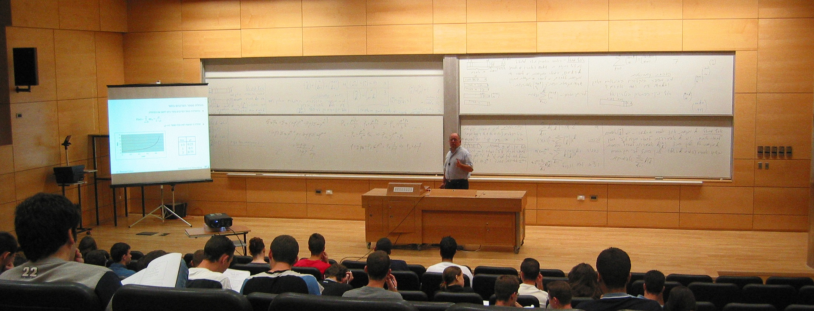

<div class="container">
  <div id="technion-backgrounds" class="carousel slide" data-ride="carousel">
    <ol class="carousel-indicators">
      <li data-target="#technion-backgrounds" data-slide-to="0" class="active"></li>
      <li data-target="#technion-backgrounds" data-slide-to="1"></li>
      <li data-target="#technion-backgrounds" data-slide-to="2"></li>
    </ol>
    <div class="carousel-inner shadow-lg bg-white rounded">
      <div class="carousel-item active">
        
      </div>
      <div class="carousel-item">
        
      </div>
      <div class="carousel-item">
        
      </div>
    </div>
    <a class="carousel-control-prev" href="#technion-backgrounds" role="button" data-slide="prev">
      <span class="carousel-control-prev-icon" aria-hidden="true"></span>
      <span class="sr-only">Previous</span>
    </a>
    <a class="carousel-control-next" href="#technion-backgrounds" role="button" data-slide="next">
      <span class="carousel-control-next-icon" aria-hidden="true"></span>
      <span class="sr-only">Next</span>
    </a>
  </div>
</div>
